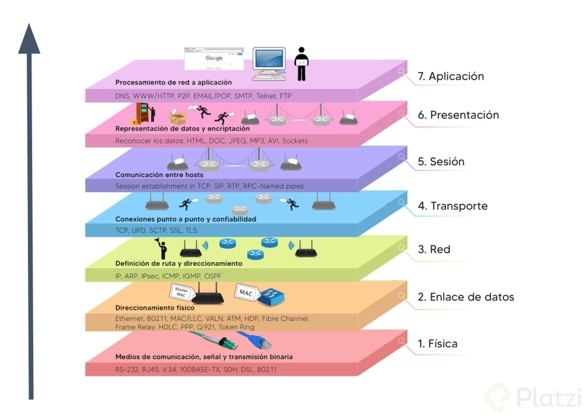
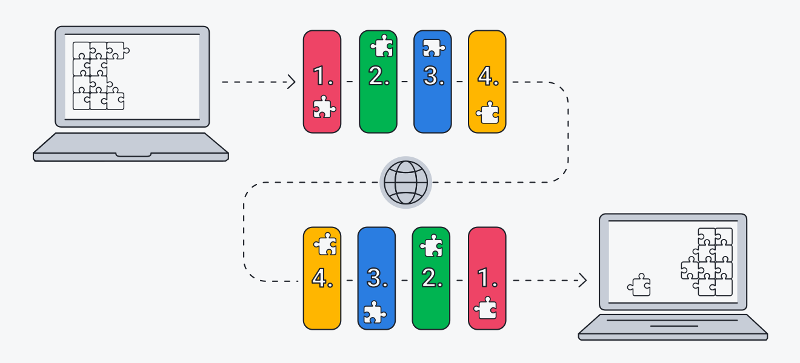
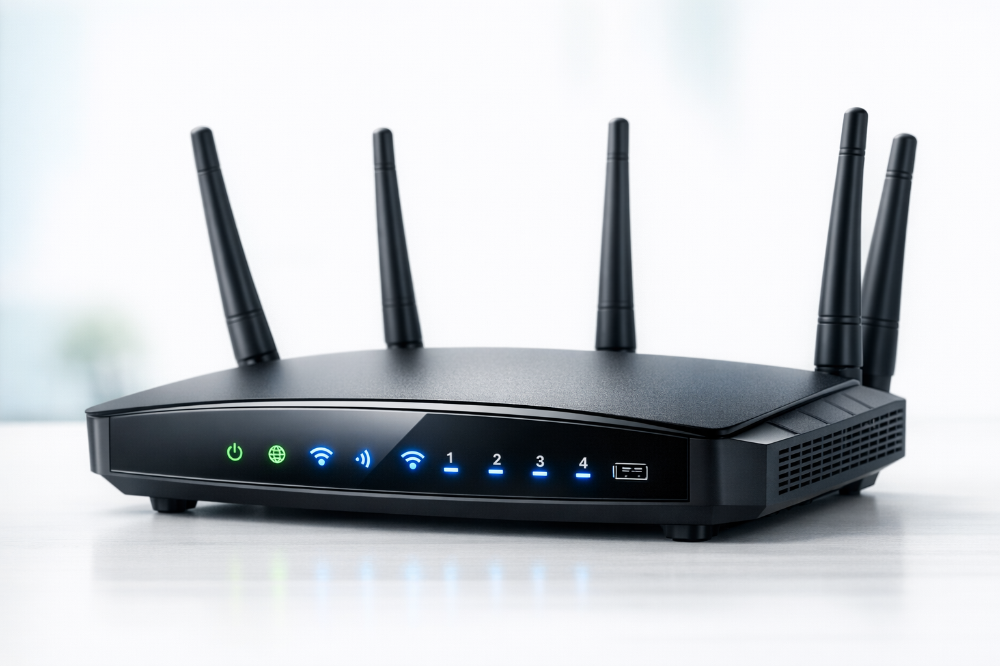

🌐 REDES INFORMÁTICAS
Comunicación entre dispositivos y sistemas
📘 Introducción
Las redes informáticas son un conjunto de dispositivos conectados entre sí que permiten compartir información, recursos y servicios. Estas redes pueden ser locales (LAN), de área amplia (WAN) o incluso globales como Internet.
Gracias a las redes, hoy es posible comunicarse en tiempo real, acceder a información desde cualquier lugar y trabajar de manera colaborativa.
🧠 Modelo OSI y TCP/IP
Modelo OSI: divide la comunicación en 7 capas:
- Física
- Enlace de datos
- Red
- Transporte
- Sesión
- Presentación
- Aplicación

Modelo TCP/IP: es el modelo real de internet y tiene 4 capas:
- Acceso a red
- Internet
- Transporte
- Aplicación

📡 Protocolos
Los protocolos son reglas que permiten la comunicación entre dispositivos en una red.
- HTTP/HTTPS: navegación web
- FTP: transferencia de archivos
- TCP: comunicación confiable
- UDP: comunicación rápida
- IP: identifica dispositivos en la red
🔗 Topologías de red
Las topologías definen cómo están conectados los dispositivos en una red.
- Bus: un solo cable principal
- Estrella: todos conectados a un punto central
- Anillo: conexión circular
- Malla: todos conectados entre sí
- Árbol: estructura jerárquica
💻 Software de red
El software de red permite configurar, administrar y simular redes.
Un ejemplo es Cisco Packet Tracer, que permite crear redes virtuales y practicar configuraciones sin usar equipos reales.
📶 Dispositivos de red
- Router: conecta redes y da acceso a internet
- Switch: conecta dispositivos dentro de una red
- Módem: convierte la señal de internet
- Access Point: permite conexión WiFi


🎨 Código de colores UTP
Norma T568A:
- Blanco/Verde
- Verde
- Blanco/Naranja
- Azul
- Blanco/Azul
- Naranja
- Blanco/Marrón
- Marrón
Norma T568B (más usada):
- Blanco/Naranja
- Naranja
- Blanco/Verde
- Azul
- Blanco/Azul
- Verde
- Blanco/Marrón
- Marrón